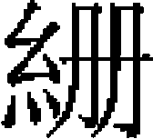
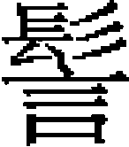

外國四
緬 暹羅 八百媳婦
緬國爲西南夷，不知其族類所出。有城郭、宫室以居，有象、馬以乘，舟、筏以濟。其文字，進上者用金葉寫之，次用紙，又次用檳榔葉，謂之緬書。
世祖至元八年，大理宣慰司遣乞台脱因等招之，不得見其酋，見其長官，導使者偕來。
十年二月，以乞台脱因充禮部郎中，與勘馬剌失里及工部郎中劉源、工部員外郎卜云失，充國信使，賜以璽書，曰：「間者大理、善闡等路宣慰司導王國使詣京師，且言至王國，但見其臣下，未得見王，又欲觀吾大國舍利。朕矜憫遠來，即命來使覲見，又令縱觀舍利。益詢其所來，乃知王有内附之意。朕一視同仁，今再遣使往諭王國。誠能謹事大之禮，當遣子弟大臣來朝，彰我國家無外之義，用敦永好，時乃之休。至若用兵，夫誰所好？王其思之！」不報。
十二年，建寧路安撫使賀天爵奏：「金齒頭目阿郭言：入緬有三道，一由天部馬，一由驃甸，一由阿郭地界，俱會緬之江頭城。又阿郭族人阿提範在緬掌五甸，户各萬餘，欲内屬，請用爲引導。」因言緬王無降雲南行省意，去使不返，必須征討。帝曰：「姑緩之。」
既而金齒千額總管阿禾來附，具言國使前爲蒲賊阻道，今蒲人降，國使已達，緬王留之不遣。無何，緬人以阿禾内附，怨之，攻其地，欲立砦騰越、永昌間。時萬户忽都、總管信苴日、總把脱羅脱孩，方奉命伐永昌之西騰越、蒲驃、阿昌、金齒未降諸部族，駐兵南甸。阿禾來告急，忽都等遂晝夜兼行，與緬軍遇，阻河爲陣，衆約四五萬，忽都等兵僅七百人。緬人前乘馬，次象，次步卒，象被甲，背負戰樓，兩傍挾大竹筒及短槍。忽都下令：「賊衆我寡，當先衝河北賊。」親率二百八十騎爲一隊，信苴日以二百三十三騎傍河爲一隊，脱羅脱孩以一百八十七人依山爲一隊。戰良久，蠻兵敗走。追之三里，抵砦門，阻淖而返。有蠻兵萬餘繞出官軍後，忽都復列爲三陣，進至河岸擊之，又敗走。連破十七砦，逐北至窄山口，轉戰三十餘里，蠻兵爲象、馬所踐蹂，故大敗。日暮，忽都中傷，始收兵。明旦，追之至千額，不及而還。俘獲甚衆，軍中以一帽、一靴、一氈衣易一俘。其脱者又爲阿禾、阿昌邀殺，歸者無幾，官軍惟一蒙古人獲一象，不得其性，被擊死，餘無死者。時十四年三月也。
十月，雲南宣慰使都元帥納速剌丁率蒙古、爨、僰、摩些軍三千八百人征之，至江頭城，招降具木、朵要、蒙帖、木耳、木充、磨欲等三百餘砦，土官曲臘蒲折户四千、孟磨愛吕户一千，磨奈蒙匡黑答八剌户二萬、蒙忙甸土官甫禄保户一萬，木都彈圖户二百，凡三萬五千二百户。以暑熱，班師。
二十年，大軍再伐緬，緬人請降。先是，帝聽納速剌丁言，發四川軍萬人，命藥剌海領之，又僉思、播、叙三州軍及亦奚不薛諸蠻軍征緬，不果行。至是，詔宗王相吾答爾、右丞太卜、參政也罕的斤率諸將征之。是年九月，大軍發中慶。至南甸，太卜由羅碧甸進軍。十一月，王命也罕的斤取道阿昔江，達鎮西阿禾江，造舟二百艘，順流至江頭城，斷緬人水路，自將一軍從驃甸徑抵其國，與太卜軍會。令諸將分攻，破其江頭城。遣人説降緬王，不應。進攻建都太公城，擣其巢，建都及金齒十二部俱降，得珍珠、珊瑚、異綵、七寶束帶無算。
二十二年，緬王遣其鹽井大官阿必立相至太公城，請納款，爲孟乃甸白衣頭目 塞阻道，不得行，遣騰馬宅者持信劄來乞。驃甸土官匿俗報上司，免軍馬入境。匿俗給榜遺驃馬定回江頭城，招阿必立相赴省，且報鎮西、平緬、麗川等路宣慰司、宣撫司，差三參持榜至江頭城付阿必立相、忙直十弄二人，期兩月至江頭城，宣撫司率蒙古軍至驃甸相見議事。阿必立相先乞言於朝廷，降旨許其悔過，後差大官赴闕。
塞阻道，不得行，遣騰馬宅者持信劄來乞。驃甸土官匿俗報上司，免軍馬入境。匿俗給榜遺驃馬定回江頭城，招阿必立相赴省，且報鎮西、平緬、麗川等路宣慰司、宣撫司，差三參持榜至江頭城付阿必立相、忙直十弄二人，期兩月至江頭城，宣撫司率蒙古軍至驃甸相見議事。阿必立相先乞言於朝廷，降旨許其悔過，後差大官赴闕。
朝廷尋遣鎮西平緬宣撫司達魯花赤兼招詔使怯烈詣其國，宣上威德。又以張萬爲征緬副都元帥，也先鐵木兒爲征緬招討使。勅造戰船，將兵六千人，以圖滿帶爲都元帥總之，由中慶抵永昌，經阿昔甸，以至忙乃甸。
二十四年正月，緬王爲其庶子速速古里所執，囚於昔怯答剌之地，又害其嫡子三人，與大官木浪周等四人同爲逆。雲南王所命官阿難答等，亦遇害。帝決意再征之，以脱滿答爾爲都元帥，李海剌孫爲征緬行省參政，將新附軍五千、探馬赤一千以行，仍調四川、湖廣軍五千赴之，募能通白夷、金齒道路者從征，令駐緬近郊，俟進止。既而雲南王與諸將進至蒲甘，緬人誘使深入，大軍失利，死七千餘人。緬遣使謝罪納款，雲南王允之，就命其渠長爲帥，定三歲一貢。二十六年，始遣委馬剌菩提班的來進方物。
成宗元貞元年，緬國阿剌札高微班的來獻舍利。二年，緬王遣子僧伽巴叔撒邦巴來貢。
大德元年，緬王請歲輸銀二千五百兩、帛千匹、馴象二十頭、糧萬石。始封其主的立普哇拿阿迪提牙爲緬國王，賜銀印，子僧哈八的爲緬國世子，賜虎符。又賜王弟撒邦巴一珠虎符，頭令阿撒三珠虎符，遣之。
踰年，復遣其世子奉表入謝，自陳部民爲金齒殺掠，率皆貧乏，以致上貢金幣愆期。帝憫之，止命間歲貢象，仍賜衣遣還。
是年，雲南省先遣管竹思加使登籠國，其國王遣其舅兀剌合兀都魯新合二人從管竹思加赴闕。二月，至蒲甘，緬王帖滅的，令可瓦力引兵登舟，執兀剌合兀都魯新合，劫掠貢物。六月，管竹思加至太公城，緬人阿只不伽闌等來言：「舊緬王帖滅的實劫奪於爾，今已去位，新王爲鄒聶，遣我輩召爾議，遣使入朝。」管竹思加至蒲甘，鄒聶曰：「帖滅的引八百媳婦兵破我甘當、散當、只麻剌、班羅等城，又劫奪登籠國貢物。爾等回朝，不知其故，必加兵於我。今帖滅的已廢，特差大頭目密得力、信者、章者思力三人奉貢物入朝。」又移文雲南省，稱：「木連城土官阿散哥也，皇帝命佩大牌子爲官人，初實無罪，前緬王欲殺之。聖旨令安治僧民，前緬王卻通叛人八百媳婦，引兵來壞甘當散當只麻剌班羅四族百姓，又劫奪登籠國貢物，故阿散哥也、阿剌者僧吉藍、僧哥速等廢前緬王，令我爲王。」行省以聞。
三年八月，太公城總管

豆，移文江頭站頭目逮的剌必塞馬加剌言：「阿散哥也兄弟三人，領軍三萬，殺緬王以下世子、妻妾、臣僕百餘人。」雲南省問其持文書來者我文哥，言：「緬王就弑時，謂阿散哥也曰：『我祖以來，不死於刃，可投我水中，或縊死。』遂縊之，埋尸於屋下，七日風雨不止。見夢於國人曰：『吾埋不得其地，若焚屍棄骨於水則晴。』從之，果然。」我文哥出十餘日，又聞世子及逃出次子之母，與前此隨國信使留緬回回、畏吾兒、漢人百餘，皆被害。阿散哥也又逼淫新王之母。是月，緬王之子及其師來奔，陳辭於雲南省，乞復讐，大概謂：「阿巴民叛，緬王乞朝廷討之，叛人怒，謂王請兵來殺掠我等，遂修城聚兵，謀廢其王。又僧可速左右及阿剌者僧吉藍從人相繼從叛者，殺密里都拜加郎等族。王謂其兄阿散哥也，可勸汝兄弟勿爾。對曰：『我説必聽，不聽，我親伐之。』王悉以國事付阿散哥也，因此得衆，遂生二心。王執而囚之。僧哥速等於不雨宿吉老亦之地，築大城拒守，水陸進兵，來逼蒲甘王釋阿散哥也，出見僧哥速等，奪象馬，掠百官，求錢物，燒城池，鎖王足置豕牢中，分其妻妾。王爲皇帝奴，冤苦如此，望拯救。」雲南行省左丞忙兀都魯迷失又上言：「緬王歸朝十一年矣，未嘗違生。今其臣阿散哥也兄弟三人以三罪加其身，置父子縲絏，又通新王之母，據舊王之妻妾。假三罪皆實，亦當奏從朝廷區處，乃敢擅權廢立，豈有此理？今其子來求救。且小甸叛人劫虜官民尚且赴救，答麻剌的微王乃上命爲國主，叛臣囚之，豈可不救？抑使外國效尤爲亂，將至大患。」行省以聞。已而又聞新王亦被弑，阿散哥也篡立。九月，中書聞於上，上曰：「忙兀都魯迷失之言是也，速議奏行。」十二月，阿散哥也犯邊，攻阿真谷馬來城，距太公城二十里，兵尋退。四年正月，召忙兀都魯迷失赴闕，議兵事。五月，故緬王婿馬來城土官納速剌上言：「大德元年，朝廷遣尚書教化的伴送世子僧加八的還國，國王集衆聽詔，惟阿剌者僧吉藍、僧哥速不至。二年二月，興兵叛逆，駐蒲甘近境。王亦整兵，諭叛賊之兄阿散哥也曰：『爾二弟不聽詔，又敢爲亂。爾今退兵從命則已，否則治爾同謀之罪。』阿散哥也諭之不從，王遂囚阿散哥也。二人引兵逼城，王遣納速剌等出戰，納速剌敗，被擒。王令國中諸僧出謂二人曰：『毋徒苦百姓。爾欲害我乎？若無此心，當釋爾兄，復乃職。否則明以告我。』阿散哥也及二弟皆曰：『王是我主，豈有異心？如不信，請如大寺爲重誓。』從之。誓畢，釋之。賊退，納速剌亦得歸。至五月，三人合兵攻蒲甘，執王及世子僧加八的、次子朝乞力朝普，囚於木連城，凡十有一月。三年四月十日，阿散哥也令弟阿難答速殺緬王並二子，餘子康吉弄古馬剌加失巴遁去，放世子於蒲甘而奪其妻，又分據王妻妾。共立王孽弟鄒聶，方十六歲，誅不附己者。十二月，又攻破阿真谷馬來兩城，納速剌逃來。」
五月十五日，中書樞密奏：「征緬事，忙兀都魯迷失請用六千人。臣等謂，緬與八百媳婦通好力大，非一萬人不可。」勅：「所擬猶少，可增爲一萬二千人。」又奏：「忙兀都魯迷失乞與薛超兀兒、劉都元帥德禄同事，及求雲南土官高阿康從軍，又請命親王闊闊監軍，以振兵威。」皆從之。上曰：「闊闊雖去，勿令預軍事。」
四年閏八月，雲南平章政事薛超兀兒、忙兀都魯迷失等發中慶，期至大理西永昌、騰衝會集。十月，入緬境。十二月五日，至馬來城大會。十五日，至阿散哥也兄弟三人所守木連城，三城相接，賊出戰，敗之。賊閉門拒守。忙兀都魯迷失、劉左丞據城東北面，薛超兀兒、高阿康參政據西面，正南無軍守之。賊日出戰，城内四面立三梢單梢砲，向外攻擊。官軍尋立排沙傅其城。
五年正月，分軍破石山寨，又召白衣催糧軍二千人攻其城南面。十九日，城上發矢石擂木，殺官軍五百餘人。二月二日，阿散哥也令十餘人呼曰：「我非叛人，乃皇帝良民。以緬王作違理三事，我等收之，彼自飲藥而死，非我等殺之。我等與蒙古人無甚作惡，若許我投降，願永受約束［一］。」又使人持金銀禮物出見。分省官諭賊：「三人親出方可，不然難信。若一年不出，我軍亦住一年。」賊竟不肯親出。
二十七日，萬户章吉察兒等言：「炎天瘴發，軍勞苦不還，實懼死傷獲罪。若令我等住夏瘴死，不如赴上前就死。若明白有旨，孰敢不住？在法，口傳聖旨勿行。我等今當回軍。」二十八日，分省官方議事，章吉察兒等遽率所部退走。二十九日，分省官亦回。三月五日，至阿占國城，追及章吉察兒等。忙兀都魯迷失移文稱：「大事未成，豈可回軍？若爾等果不肯住，可留軍一半或三千，住夏守賊。」平章薛超兀兒、劉左丞、高參政皆言：「平章能住夏，我輩願徧告軍官，俱令住夏。」是日，新王之母乘象追及分省官，訴：「賊拘我於木連城，今始放出。若大軍五日不退，必出降。」章吉察兒等宣言：「病軍已先行，我等明日亦去，無可議者。」分省官命追回先行軍，皆言：「已去遠，無及矣。」次日，分省官遂下令班師。薛超兀兒、忙兀都魯迷失上言：「賊兵困屈，旦夕出降。參政高阿康、土官察罕不花、軍官章吉察兒等，同稱軍人多病，不可住，擬合回軍。分省官留之，不聽。彼既行，分省官亦不能住。」又言：「賊饋阿康酒食，阿康受之，疑是寶貨。」又軍回五程，阿康出銀三千兩曰：「此阿散哥也賂諸將校者。」薛超兀兒等言：「此銀爾實受之，我輩未嘗知也。欲與諸將，爾自處之。」蓋因阿康與察罕不花等預此行，故功不成，乞置對以懲受賂者。
八月八日，丞相完澤等奏遣河南平章政事二哥等赴雲南，雜問之。自宗王闊闊，平章政事薛超兀兒、忙兀都魯迷失，左丞劉德禄，參知政事高阿康，下至一二大將校、幕官、令史，皆受賊賂，共爲金八百餘兩、銀二千二百餘兩，遂不能號令偏裨。阿康因與察罕不花，令諸將抗言不能住夏，擅回。於是阿康、察罕不花俱伏誅。忙兀都魯迷失前死。薛超兀兒、劉德禄遇赦，皆追奪宣勅，永不叙用。忙兀都魯迷失子萬户咬咬、忽都不丁，千户脱脱木兒真，杖決有差，皆奪所居官，籍其家産之半。其餘將校，各以輕重被笞。察罕不花者，麗江路軍民宣撫使也。是役也，自宗王以下皆以納賂麗於罰，辱國莫甚焉。
武宗至大元年，緬使貢白象。帝命朵爾只爲兵部侍郎，使其國。
仁宗延祐二年，緬王遣其子脱剌合來朝。六年，復遣其臣趙欽撒入貢。
英宗至治元年，帝御大明殿，受緬國使者朝。
泰定元年，緬國王子吾者那等争立，歲貢不至，命雲南省宣諭之。三年，緬國王答里耶伯以國亂來乞師，詔雲南就近安撫之。四年，答里必牙請復立行省於迷郎崇城，不允。
文宗至順三年，緬王遣使者阿落等十人來貢方物。
惠宗後至元四年，又遣使來貢方物。立邦牙等處宣慰司都元帥府并總管府。
緬國：東至八百宣慰司，南至海，西至孟養，北至猛密宣撫司，自司東北三十八程至雲南省治。其山曰小豹，其水曰金沙江，緬人恃以爲險。其俗狙詐慓悍。男子善浮水，綰

頂前，用青白布纏之。婦人綰頂後，不施脂粉。事佛敬僧，有大事則抱佛説誓，或詣僧誓之，然後決。其産：象、犀、馬、椰子、白氈、布、兜羅綿。樹類椶，高五六丈，結實如掌。土人以麵納罐中，以索懸罐於實下，劃實取汁，熬爲白糖。其葉即貝葉，寫緬書用之。石油自石縫流出，臭惡而黑色，可塗瘡。都會：有江頭城，至騰衝十五日。太公城，在江頭南十日。馬來城，在太公城南八日。安正國城，在馬來城南五日。蒲甘，緬王城，在安正國城西南五日。所謂緬中五城也。暹與羅斛，古之扶南國也。
暹國，北與雲南徼外八百媳婦接壤，東界安南，西北距緬國。
羅斛，在暹之南，濱大海。
暹土瘠，不宜稼穡。羅斛地平衍，種多穫，暹人仰給焉。有大河自暹達於羅斛，東南入海。每夏有黄水自海港漲入内河，農民乘時擢舟播種，苗隨水以漸而長，水尺苗亦尺，水退苗熟。有播植無耕耘，故穀豐而賤。《晉書》：「扶南國，西去林邑三千餘里，在海大灣中，其境廣袤三千里，人以耕種爲務，一歲種，三歲穫。」是也。歷晉、宋、齊、梁、隋、唐，屢通貢獻。後分爲暹、羅斛二國。
世祖至元二十六年，羅斛遣使入貢。成宗元貞初，暹國進金葉表。暹人與麻里予兒舊相讎殺，至是皆歸順。英宗至治三年，暹國來入貢。惠宗至正間，暹始降於羅斛，因合爲暹羅國。暹羅南境，斗入大海中，形如箕舌，延袤約三千里，遠出占城、真臘之西南，隔海相望，成一大灣云。
八百媳婦者，夷名景邁。世傳其長有妻八百，各領一寨，故名。自古不通中國。
世祖中統初，命將征之，不能達而還。後遣使招徠，置八百大甸軍民宣慰司。
又有大、小徹里，本古産里。伊尹四方獻令曰：「産里以象齒、短狗獻周公，作指南車導之歸。」故又名車里，後譌爲徹里云。其地在元江南，與八百媳婦犬牙相錯。
成宗元貞二年，大徹里胡會來降，立徹里軍民總管府，又置耿東路耿當、孟弄二州。大德元年，八百媳婦叛，寇徹里，遣野老不花討之，不克。
四年，用雲南右丞劉深計，發兵二萬，立征八百媳婦萬户府二，出四川、雲南囚徒從軍，人給 子六十索。深等將兵，取道順元路，調民供給。土官宋隆濟紿其衆曰：「官軍徵發汝等，將盡翦髮黥面爲兵，身死行陣，妻子爲奴，勢所必至。」衆惑其言，遂反。深復脇水西土官之妻蛇節，出金三千兩、馬三千匹。蛇節不能堪，聯結隆濟，率苗狫、紫江諸蠻，圍深窮谷中，攻破楊黄寨，殺掠甚衆。朝命陝西平章也速帶爾、湖廣平章劉國傑，將兵合討之，大敗隆濟兵於墨特川。其兄子順元路同知阿重，縛之來獻，蛇節亦乞降，並斬之。深坐棄市。於是罷所置萬户府，留蛇節養子阿闕于水西，以撫其民，而升阿重爲宣撫使。
子六十索。深等將兵，取道順元路，調民供給。土官宋隆濟紿其衆曰：「官軍徵發汝等，將盡翦髮黥面爲兵，身死行陣，妻子爲奴，勢所必至。」衆惑其言，遂反。深復脇水西土官之妻蛇節，出金三千兩、馬三千匹。蛇節不能堪，聯結隆濟，率苗狫、紫江諸蠻，圍深窮谷中，攻破楊黄寨，殺掠甚衆。朝命陝西平章也速帶爾、湖廣平章劉國傑，將兵合討之，大敗隆濟兵於墨特川。其兄子順元路同知阿重，縛之來獻，蛇節亦乞降，並斬之。深坐棄市。於是罷所置萬户府，留蛇節養子阿闕于水西，以撫其民，而升阿重爲宣撫使。
武宗至大二年，八百媳婦與大、小徹里作亂，威遠州土官谷保奪據木羅甸，遣雲南右丞算只爾威招之，私受谷保賂，竟以敗還。
仁宗皇慶初，八百媳婦再寇邊，帝降詔招撫之，始獻馴象、白象，繼遣其子招三聽來朝。時大徹里哀用亦遣貢使七十五人詣闕，賜裘帽、鞾韈有差。
泰定二年，以土人寒賽爲徹里軍民府總管。四年，八百媳婦請官守，置蒙慶宣慰司都元帥，及木安、孟傑二府于其地。
文宗嗣位，八百媳婦使者昭哀入貢。
其地：東至老撾，南至波勒蠻，西至大吉剌，北至孟艮府。自姚關東南行五十程至其國，有南格剌山，下有河，南屬八百，北屬車里。平川數千里，幅員廣遠。其産：巨象，安息、白檀諸香。民皆種，刺花樣於眉目間，雕題也。好佛惡殺，每邨立一寺，每寺建塔，約以萬計。有敵人來侵，不得已舉兵應之，得其讐即止。俗名「慈悲國」也。
【校勘記】
［一］「願」，原作「顧」，據文意改。按「願永受約束」一句，蘇天爵《國朝文類》卷四一、佚名《皇元征緬録》均作「省官鑒之」。
本章完!